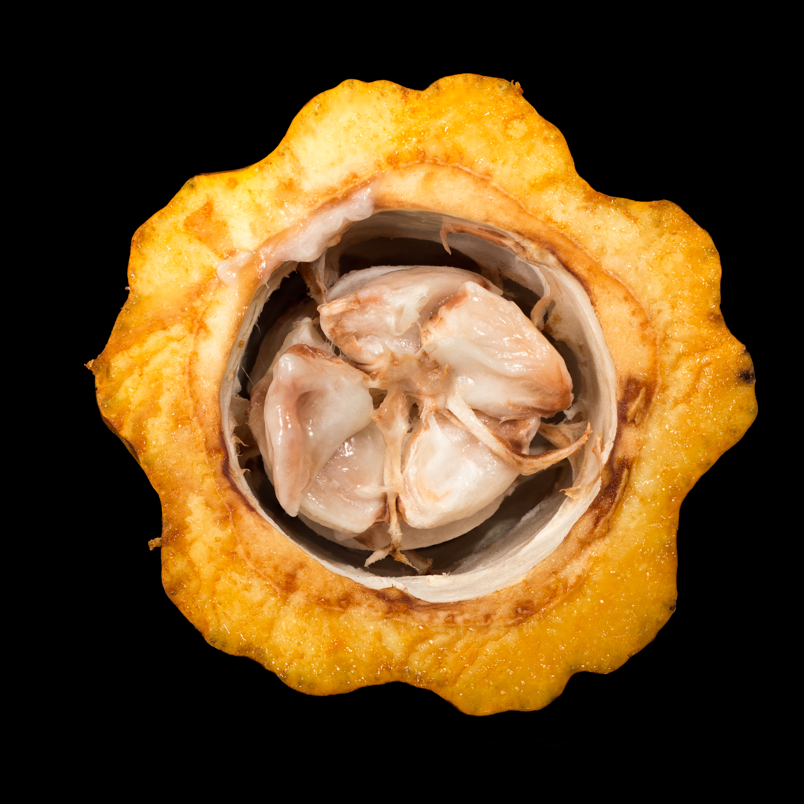
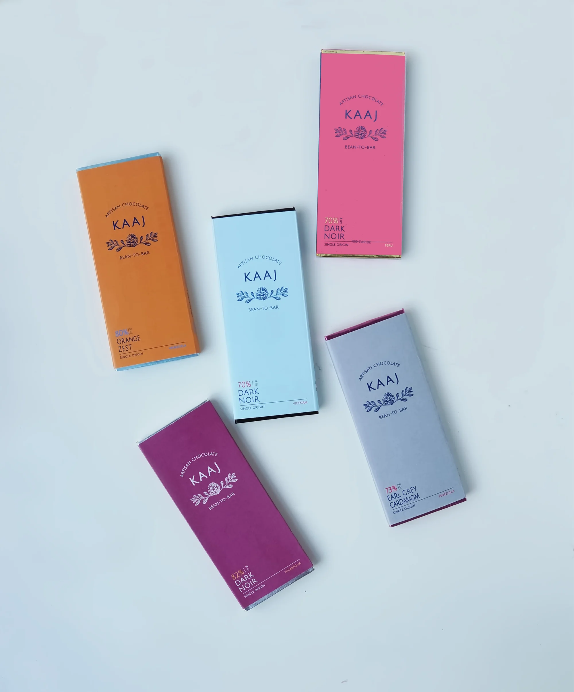

Fino de Aroma
Fino de Aroma
Los Ríos, Vinces
Nacional Fino de Aroma
La variedad insignia del Ecuador: perfume floral a jazmín, miel silvestre y notas frutales únicas en el planeta.
Cuna del cacao · Ecuador
Hace más de 5.300 años, en la cuenca amazónica de Palanda, comunidades de la cultura Mayo-Chinchipe domesticaron por primera vez el Theobroma cacao. Este archivo reúne las variedades patrimoniales del Ecuador, su botánica viva y la memoria de las huertas fluviales.
10 variedades patrimoniales · Cuna mundial del cacao

Por qué existe este archivo
«Ecuador no solo exporta cacao: es la cuna originaria de su aroma en el mundo.» Memoria del Cacao Nacional

En 2018, estudios arqueogenómicos publicados en Nature Ecology & Evolution confirmaron que el origen más antiguo de la domesticación del Theobroma cacao se encuentra en la Amazonía ecuatoriana, en el yacimiento de Santa Ana-La Florida (Zamora Chinchipe), hace unos 5.300 años.
Durante siglos, el Cacao Nacional —bautizado históricamente como «Cacao Arriba» porque bajaba de las haciendas río arriba de Guayaquil— cautivó a maestros chocolateros por sus notas florales a jazmín y frutas frescas. Hoy, frente a la estandarización industrial, este archivo documenta la riqueza botánica de nuestras chakras y fincas patrimoniales.
Selección del archivo
El mítico Nacional Fino de Aroma de Los Ríos, el Arriba Clásico de la cuenca del Guayas y el prolífico CCN-51. Tres expresiones del cacao en suelo ecuatoriano.
Fino de Aroma
Los Ríos, Vinces
La variedad insignia del Ecuador: perfume floral a jazmín, miel silvestre y notas frutales únicas en el planeta.
 Arriba Clásico
Arriba Clásico
Cuenca Fluvial del Guayas
El grano que dio origen a la época del Gran Cacao: notas de madera noble, cacao tostado y acidez equilibrada.
 CCN-51
CCN-51
Naranjal, Guayas
Desarrollado en 1965 por el científico ambateño Homero Castro: mazorcas rojas de alta productividad y cuerpo vigoroso.
Archivo comunitario
El archivo crece con cada aporte de los productores y chocolateros. Comparte el cacao de tu chakra, una técnica de fermentación o una memoria familiar: lo documentaremos con crédito.
